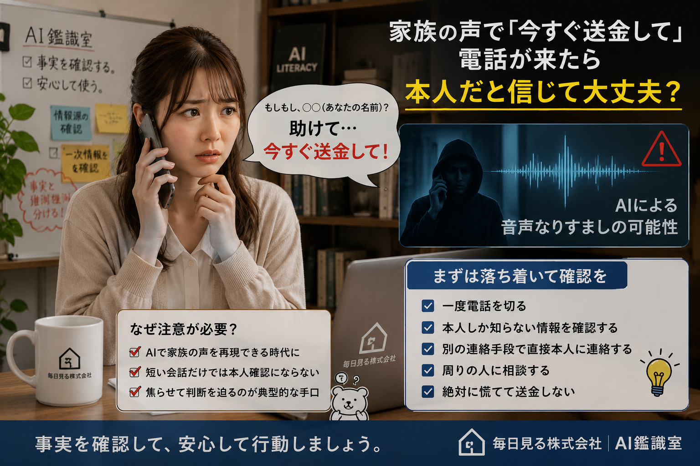

家族の声で「今すぐ送金して」と電話が来たら、本人だと信じて大丈夫？
家族そっくりの声で緊急の送金を求められたとき、声の自然さだけで本人と判断せず、安全に確認する方法を整理します。
- 家族や知人から急な送金依頼を受ける可能性がある人
- AIによる声のなりすましが気になる人
- 離れて暮らす家族の詐欺対策を考えたい人
確認レベル 5
行動を止めて相談
危険度ではなく、必要な確認の程度を表しています。
金銭を求められているため、声が本人らしくても送金を止め、別の連絡手段で確認したい事例です。
Step 1
身近な事例を知る
家族そっくりの声で、事故に遭ったのでお金を送ってほしいと電話が来た
知らない電話番号から着信があり、出ると離れて暮らす家族によく似た声で「事故を起こした。今すぐ修理代を振り込んでほしい」と頼まれました。話し方や声色は本人らしく聞こえますが、電話を切らないよう急かされ、指定された口座へすぐ送金するよう求められています。

Step 2
あなたならどうする？
まず一つ以上選んでから確認してみてください。
推奨される行動- 一度切り、普段使っている番号へかけ直す
- 家族だけが分かる質問をする
- 別の家族や警察へ相談する
選んだカードの表示を見ながら、今回はどの行動が安心につながるか確認できます。
声が自然でも、電話番号や送金先まで本人のものとは限りません。一度電話を切り、普段使っている連絡先から本人へ確認してください。確認できるまで送金や個人情報の提供を止めることが安全につながります。
Step 3
確認ポイント
電話を切らないよう求められていないか
詐欺では、家族や金融機関へ確認する時間を与えないため、通話を続けるよう急かすことがあります。
普段と異なる電話番号や送金先ではないか
声だけで判断せず、着信番号、振込先名義、送金方法が普段と違っていないか確認します。
緊急性や不安を強く刺激されていないか
事故、逮捕、入院などを理由に即決を求められた場合は、一度立ち止まる合図です。
別の連絡手段で本人確認できるか
普段の電話番号、メッセージアプリ、同居人や勤務先など、着信とは別の経路から確認します。
Step 4
現時点での見立て
確度は高め本人確認が終わるまで送金しない
声の自然さだけでは本人と確認できません。一度通話を終了し、登録済みの電話番号へかけ直すか、別の家族を通じて本人の状況を確認してください。
Step 5
安全な対処方法
安心につながる行動
- 一度電話を切る通話を続けたままでは、相手のペースで判断を急がされる可能性があります。
- 普段使っている連絡先へかけ直す着信履歴からではなく、自分で保存している番号や公式な連絡手段を使います。
- 家族内の合言葉や確認方法を決めておく公開されている誕生日や住所ではなく、第三者が推測しにくい確認方法が役立ちます。
- 送金前に別の人へ相談する一人で緊急事態に対応すると判断が狭くなりやすいため、家族、金融機関、警察などへ相談します。
避けたい行動
- 声が似ていることだけで本人と断定する現在の音声生成技術では、声の特徴や話し方を自然に再現できる場合があります。
- 相手に指示された番号へ確認電話をかける同じ詐欺グループにつながる可能性があるため、自分で確認した連絡先を使用します。
- 確認のために暗証番号や認証コードを伝える本人確認を装って、口座やアカウントを奪うための情報を聞き出されることがあります。
Step 6
AIの前向きな活用
AIを家族の詐欺対策づくりに活用する
AIは通話相手が本物かを最終判定する用途には向きませんが、家族で決める確認手順や、緊急時のチェックリストを作る補助には活用できます。
- 家族向けに、怪しい電話を受けたときの確認手順を短くまとめてもらう
- 高齢の家族にも伝わりやすい詐欺対策メモへ言い換えてもらう
- 公開情報から推測されにくい家族用の確認ルールを考える際の観点を出してもらう
今回、覚えておきたいこと
声ではなく、別の連絡手段と決めておいた手順で本人を確認する。
情報源
- Evaluating AI Models' Capability to Automate Voice Phishing Attacks（外部リンク） arXiv / Expert Systems with Applications 研究・論文
- FCC Makes AI-Generated Voices in Robocalls Illegal（外部リンク） Federal Communications Commission 官公庁
誠主任からひとこと